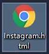
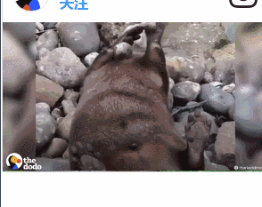

F12大法——揭开所有网页的面纱
今天就带大家了解一个生活中基本没有使用过的按键——F12
原料
*一台拥有上网功能与F12的电脑（应该不可能没有的……）*Google Chrome浏览器（方便简洁干净安全，强烈推荐！！）*网络加速器（为什么需要？我不知道！）
功能
*帮助你获得绝大多数网站上的图片、动图、视频（均为原图）*解除部分网站的版权保护 （下载下来的图片自己收藏就好哟）
F12——开发人员工具。通常服务于网站开发人员，能够揭开网页的面纱，将网页下的代码展现给大家。
有好多小伙伴可能要说了，我在电脑上直接右键另存为就好了啊，为什么还要这么麻烦呢？其实，很多网站在你点击右键——另存为之后下载的内容都是这样的一个网页……

我们不是网站开发人员，也不是能鼓捣代码的程序员，但是我们普通用户仍然能靠这个工具得到一些福利。 很多小伙伴可能已经迫不及待的去尝试按下键盘上的F12了，但是——我们不用像一个开发者一样去追溯网页的根本，我们只需要找到自己感兴趣的内容就好，所以只需要两步： 在想要下载的图片/Gif/视频/音频上点击：鼠标右键——检查（审查元素）
要记得一定要在想要下载的内容上点击哟，在这里以Instagram为例：
*请在Google浏览器中打开，下载地址：https://www.google.com/chrome/browser/desktop/index.html*请注意，本文推荐的是电脑端……手机端是不可以的哟~ 这个方法能够让大家不借助任何APP，迅速的下载Instagram上的图片、动图、视频、音频……
你是怎么在电脑上访问Instagram的？我为什么是这样的？
我不知道，可能你缺了个加速器吧
可以科学上网后，我们就可以开始扒图之路啦！ Instagram 在喜欢的图片上点击右键——检查，注意观察浏览器右侧高亮部分。 点击高亮部分上一行的▲ 我们可以看到一行网址——这就是图片的地址啦~
在得到的网址上方点击右键——Open link in new tab（在新窗口打开图片）
在新的窗口中右键——另存为，高清大图搞定！
*此方法同样适用于Instagram中的MV、小视频、Gif、音频等内容*要记得开vpn才能上的去Instagram哟~*视频类内容会需要在新出现的窗口内再次点击一下▲才能看到链接。
F12大法同样适用于从禁止转载的知乎文章中复制下来部分文字（如果你想把这段文字储存起来的话）……
适用于500PX找到高清大图（请勿用于商业用途，尊重作者的版权。）
只需要双击右键——检查——点击七次之后便能看到超高清大图……
至于Pinterest如何找到高清图片或者下载Gif，请点击Pin的图片，直到打开图片真正的源站点后，我们就可以右键——另存为图片啦~ 大家呼声超级高的Tumblr视频下载也可以由这个完成，但是由于Tumblr的视频大多数都是外链其他网站，具体的下载方式还得看外链网站的具体情况，但是绝大多数都能下载啦~

“我是纯洁的汤不热视频”
得到了真传，快去下载，打开电脑丰富自己的硬盘吧~